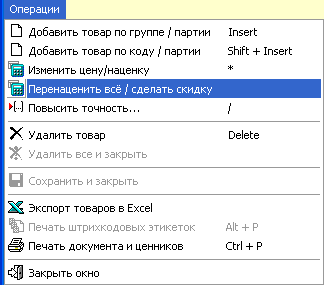
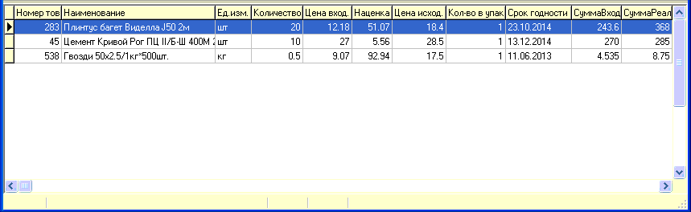
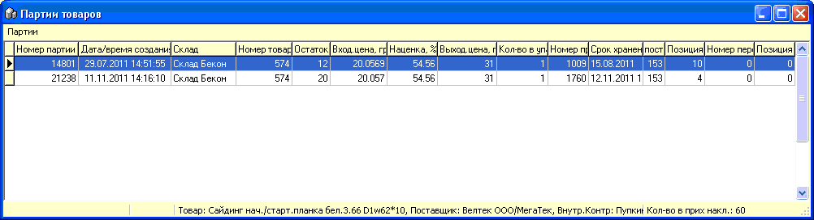
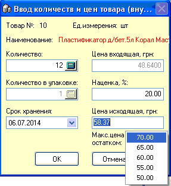
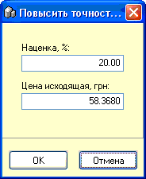
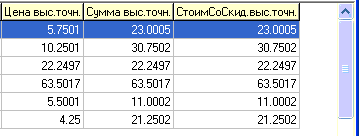
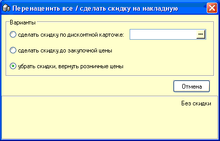

После заполнения заголовка расходной накладной, наполняем товарами табличную часть, подсказка сочетаний клавиш дана в меню окна.Добавить товар в расходную накладную можно либо по штрихкоду, либо по локальному коду, введенному вручную. Первый вариант наиболее быстрый - Вы считываете штрихкод сканером и если он есть в базе данных товаров, то автоматически откроется форма выбора партий товара (см.ниже), если же такой штрихкод отсутствует, то будет выдано соответствующее предупреждение.Второй вариант - добавление по локальному коду/наименованию (используется для весового товара или для такого на котором нет штрихкода) - можно разделить на два подварианта: первый (горячая клавиша Insert) - добавление через товарную группу - при выборе этого варианта пользователю будет показан список товарных групп, он может набрать номер товарной группы на цифровой клавиатуре и нажать клавишу Enter (или добавить новую товарную группу - см. раздел "Товарные группы"), затем ему откроется список товаров данной группы, где он перейдет к нужному товару и нажмет Enter и появится форма выбора партий товара.В данной форме выберите (при помощи стрелок на клавиатуре) необходимую партию и нажмите Enter - появится форма добавления товара в документ.По умолчанию предлагается добавить все количество, что есть в партии, но вы можете изменить количество. Также можно изменить цену по которой товар будет продаваться (но это если разрешено в настройках программы). Так же когда курсор стоит в окошке "Цена исходящая, грн" при нажатии сочетания клавиш Ctrl+Space(пробел) появится меню (как на рисунке выше) - сюда отбираются оптовые цены из карточки товара (складка №2 - см. соответствующий раздел справки), если ни одна цена там не проставлена - меню не появится вообще.Также, в расходной накладной можно использовать повышение точности розничной (исходящей) цены до 4х знаков после десятичной точки (горячая клавиша "/"). Это необходимо на мелком недорогом товаре, но с большим количеством. Например небольшая наценка на копеечных шурупах при округлении до десятых вообще не изменяет цену по сравнению с приходной, что конечно недопустимо. Более точные данные отображаются в соответствующих полях табличной части. В сохраненной ранее расходной накладной для пользователей с уровнем доступа "Администратор" доступно меню для скидок клиентам:Эта строка меню вызывает форму скидок:При сканировании карты или при выборе ее вручную из справочника Дисконтных карт на товары согласно настроек программы (вкладки Скидки и Скидки2 в настройках) и назначенных параметров конкретной карты (карточки карт в справочнике Дисконтных карт) будут начислены скидки. Доступны простой %, накопительная система скидок и скидки индивидуально по товарным группам.При выборе варианта скидки до закупочной цены - наценка будет выставлена в 0%, а розничная цена будет выставлена равной закупочной.Если же указать вариант "убрать скидки, вернуть розничные цены" все цены будут пересчитаны на цены без скидок.